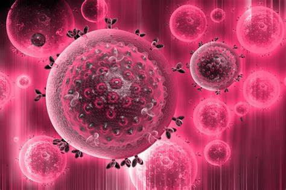

...
LE VIH
Le VIH est le virus de l’immunodéficience humaine. La particularité du VIH est qu’il s’attaque aux cellules du système immunitaire, en particulier aux lymphocytes. Ce sont des cellules qui protègent le corps contre les attaques des maladies et autres infections. Le VIH peut donc provoquer des maladies graves et même la mort. Les symptomes du VIH sont très variables d’une personne à l’autre. Ils peuvent être très discrets ou très importants.
LA CHLAMYDIA
La Chlamydia est une infection sexuellement transmissible (IST) provoquée par une bactérie. Elle est très fréquente et peut être asymptomatique. La chlamydia est transmise par voie sexuelle. Elle peut être transmise par voie orale, vaginale ou anale.
LES CONDYLOMES
Les condylomes sont des verrues de la peau et des muqueuses liées à une infection par un virus de la famille des Human papilloma Virus (HPV). On peut retrouver les condylomes au niveau des organes génitaux externes et internes, de l’anus et parfois de la gorge. Il existe plusieurs types de condylomes, le acuminé, le papuleux et le plan.
LA GONORRHÉE
La gonorrhée est une infection sexuellement transmissible qui touche surtout les moins de 30 ans, en particulier les hommes et se transmet lors de rapports sexuels non protégés. Tous les types de rapports sexuels peuvent être contaminants, y compris la fellation et le cunnilingus qui seraient à l’origine de la moitié des cas de gonorrhée en France.
L'HERPES GENITAL
L'herpès génital est une infection sexuellement transmissible chronique, due à un virus voisin de celui qui provoque l'herpès de la bouche. Une fois la personne infectée, les crises d'herpès génital peuvent survenir tout au long de la vie. Les femmes sont un peu plus touchées que les hommes.
LA SYPHILIS
La syphilis est une infection bactérienne sexuellement transmissible très contagieuse en particulier chez les homosexuels masculins qui représentent 80 % des cas. Chez 40 % des personnes touchées, en l’absence de traitement, de graves complications apparaissent.
LA TRICHOMONASE
La trichomonase est une infection sexuellement transmissible qui peut entraîner des complications et ne doit pas être négligée.
L'UREAPLASMA UREALYTICUM
Ureaplasma urealyticum est une bactérie de la famille des mycoplasmes. Présente en excès dans les voies génitales, elle traduit un déséquilibre de la flore vaginale et un risque d'infections chez la femme mais aussi chez l'homme.
L'UTERITE
L'urétrite est une inflammation de l'urètre, la voie qui conduit l'urine depuis la vessie jusqu'au méat urinaire, l'orifice par lequel sort l'urine ainsi que des glandes péri-urétrales. Cette inflammation est d'origine infectieuse dans la plupart des cas, et elle fait alors partie des infections sexuellement transmissibles (IST).